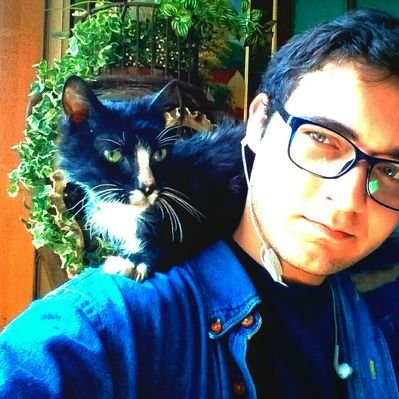

|

|
Kharleann Cabrera
Estudiante de Computacion en la Universidad Central de Venezuela,
interesado en el area matematica y machine learning.
Actualmente en formacion en areas relacionadas al desarrollo web y la creacion de nuevas aplicaciones.
Apacionado por la investigacion cientifica, la tecnologia y los tercios.
Buscador de tesoros y joyas perdidas en las decadas pasadas.
Mi color favorito es: Verde
Mi libro favorito es: Ready Player One y The Madman tale
Estilo de música preferida es: Rock progesivo
Mis videosjuegos favoritos son:aventuras graficas
Lenguajes Aprendidos: strong>Java,C++,C,Python,Haskell
Si necesitan comunicarse conmigo escribir a: kharleann@gmail.com
|